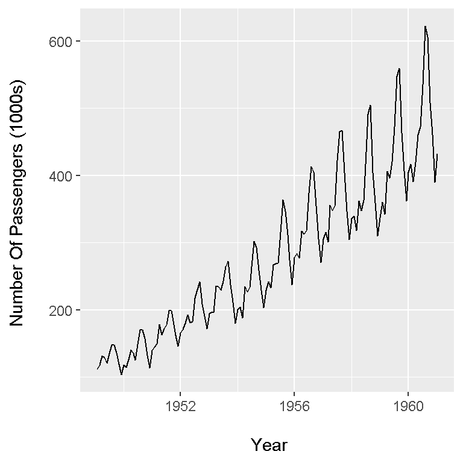

Hi. This is a short page on how to plot time series data in R using the ggplot2 and plotly packages. (I no longer like base R for plots.) I have recently worked on refreshing my time series knowledge and skills (in R). The contents below is stuff I have played around with through trial and error.
In here I am using the airpass dataset found in the faraway package in R. Load the three packages in R as follows:
# Plotting Time Series Data In ggplot2 & plotly:
library(ggplot2)
library(faraway)
library(plotly)
We put the airpass dataset into a variable called air_data. The head() function previews the first six rows of the data while str() gives the dimensions of the dataset and the variable types.
# Monthly totals of airline passengers dataset:
# Help says years 1949 to 1951 but
# https://www.rdocumentation.org/packages/TSA/versions/1.01/topics/airpass
# says 1949 to 1960 for the years.
air_data <- airpass
head(air_data)## pass year
## 1 112 49.08333
## 2 118 49.16667
## 3 132 49.25000
## 4 129 49.33333
## 5 121 49.41667
## 6 135 49.50000str(air_data)## 'data.frame': 144 obs. of 2 variables:
## $ pass: num 112 118 132 129 121 135 148 148 136 119 ...
## $ year: num 49.1 49.2 49.2 49.3 49.4 ...
(The years for the dataset is from 1949 to the end of 1960 instead of 1949 to 1951 stated in the help section of the dataset.)
The variable pass represents the number of passengers in thousands and year is the year in decimal form.
In the year column, the dates are in decimal form where 49 stands for 1949. The next line adds 1900 to each value in the year column.
air_data[, 2] <- air_data[, 2] + 1900
Here is a check:
head(air_data)## pass year
## 1 112 1949.083
## 2 118 1949.167
## 3 132 1949.250
## 4 129 1949.333
## 5 121 1949.417
## 6 135 1949.500
The column names at the moment are not very great. These column names can be renamed using colnames().
# Rename Columns:
colnames(air_data) <- c("Number Of Passengers (1000s)", "Date")
head(air_data)## Number Of Passengers (1000s) Date
## 1 112 1949.083
## 2 118 1949.167
## 3 132 1949.250
## 4 129 1949.333
## 5 121 1949.417
## 6 135 1949.500
The ggplot2 package in R is quite helpful when it comes to plotting time series data. I have the year in the x-axis and the number of passengers in the y-axis.
# Ggplot time series plot:
# Reference: https://www.r-bloggers.com/plotting-time-series-data-using-ggplot2/
ggplot(air_data, aes(x = air_data[, 2], y = air_data[, 1])) +
geom_line() +
xlab("\n Year") +
ylab("Number Of Passengers (1000s) \n")
It appears that the number of passengers increase steadily over time from 1949 to 1961. This increase in passengers is probably from an increase in population and/or rising (disposable) incomes. Also, there is some seasonality where there are cyclical growths and decays.
Another data visualization package is plotly. Instead of plus signs, plotly uses the pipe operator %>%.
# plotly Plot:
# Reference: https://plot.ly/r/figure-labels/
plot_ly(x = air_data[, 2], y = air_data[, 1]) %>%
add_lines(y = air_data[, 1]) %>%
layout(xaxis = list(title = "Year", titlefont = "Courier New, monospace"),
yaxis = list(title = "Number Of Passengers (1000s) ", titlefont = "Courier New, monospace"))
This plotly plot does look a bit cleaner and there are more x-axis ticks for the year. The plotly package is somewhat new to me. I would need to play around with plotly a little bit more.